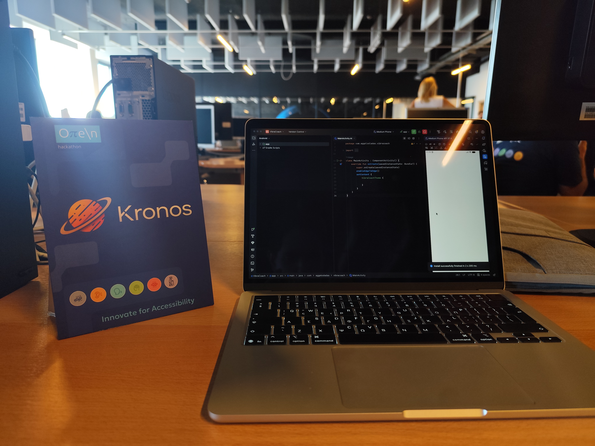
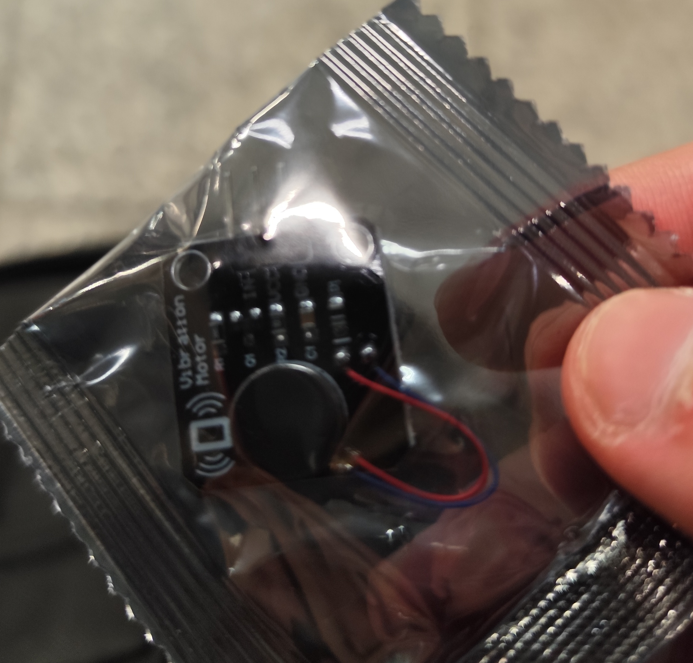
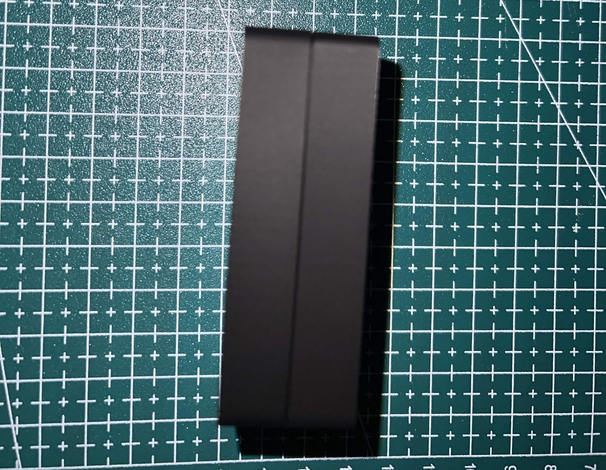

Engineering Accessible
Haptic Feedback.
The VibraCoach project started in Οπεν Hackathon for Accessibility 2026 as a vision to help deaf and hard-of-hearing athletes compete in sports without the need of visual or auditory cues. Powered by the ESP32-C3 and connected via BLE, it delivers distinct (and customizable) physical cues for real-time coaching.
Οπεν Hackathon 2026
For Accessibility
How it
started

Theodoris Iliadis (left) & Aggelos Ladas (right)
My name is Aggelos Ladas and this is how the VibraCoach project came to life. The idea was born during the Οπεν Hackathon 2026 for Accessibility. Under the umbrella of my startup initiative Kronos, I partnered with Theodoris Iliadis for the weekend to tackle a unique challenge in the accessibility space.
The problem we wanted to solve
Deaf and hard-of-hearing individuals often face challenges in receiving real-time feedback during physical activities. Traditional visual or auditory cues can be limiting, especially in dynamic environments.
We envisioned a wearable device that could provide distinct haptic feedback, allowing users to receive immediate guidance without relying on sight or sound. This way, deaf basketball players, for instance, could feel the rhythm of the game and receive coaching cues through vibrations, enhancing their performance and engagement.
We did this with a simple architecture: a small wearable device that communicates with a mobile app via Bluetooth Low Energy (BLE). The app features a total of 8 customizable vibration patterns, each corresponding to specific coaching cues. The app is still in its early stages, but the prototype demonstrates the potential of haptic feedback in sports coaching for the deaf and hard-of-hearing community.
The 3-Day Prototype

DAY 1
First Hardware
The first day was a big challenge. There was a lot of research to do to get familiarized with the core concept of our problem. One thing was certain, the solution is a wearable device. How do we help deaf athletes get real-time feedback without breaking the rules of Basketball? Can athletes even wear wearables during a game? How do we start? Fortunately, me and Theodoris had a brainstorming session and we came up with a simple architecture: a small wearable device that communicates with a mobile app. Not long after, we made a small prototype of the android app, an compact grid of buttons with customizable choices designed for the coach/communicator. This is were we tackled our real first challenge, hardware. Thodoris and I both come from a software engineering background, so the hardware part was a challenge on its own. We decided to use the smallest possible programmable microcontroller we could think of, the ESP32-C3. The one we bought even had a small screen on it, which was a nice bonus. The picture below shows our first achievement in this journey, making it actually work and display a message.



DAY 2
Implementation & Non-Blocking Patterns
The second day was not any easier. This is where the real connection between the ESP32-C3 and the mobile app was established. The first step was making the Android app send a signal to the board and showing it on the screen. This is when we painfully realized that the ESP we used was single-core, meaning the screen could not update as fast as the signal was coming in. This was not a big problem on its own, but it helped us realize that when we move to the next step, we have to remember the limits of the board's capabilities. We got some special help from mentor George Martos, who himself volunteered to help us with the soldering part of the project. At the end of the day, we had a working prototype that could receive signals from the app and vibrate in various pre-defined patterns. The latency was ideal and the working range between the ESP and the phone was more than enough for our prototype. After some testing, we figured that the range of our prototype was about 30~35 meters in a crowded room.


DAY 3
Enclosure & The Final Pitch
As with any hackathon, the last day is always the most stressful. The third day was when we finalized the prototype by adding a simple 3D printed container to hold the two modules together. Special thanks to mentor Manos Koumentakis for helping us with the 3D printing. Unfortunately, we did not have the time to buy a battery and make it portable, but the idea was to use a small 3.7V LiPo battery. After that, we had to prepare for the final pitch. We received a lot of positive feedback from the mentors and the judges and we were very happy with our approach. In the end we did not win the hackathon, but the whole experience was a great opportunity to learn first-hand how with a small team and a simple idea, you can make a real difference in the lives of people with accessibility needs.



Explore the Hardware. This is how we want the final product to look.
Interact with the digital version, use the controls to navigate around the model.